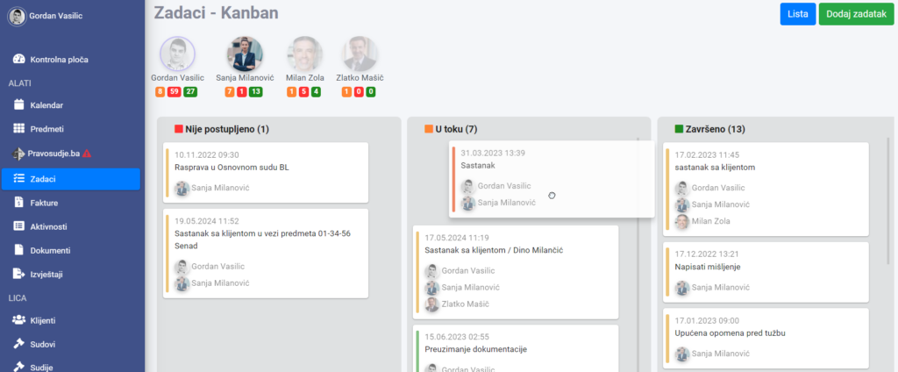

Unutar modula Zadaci, možete koristiti Kanban ploču koja vam omogućava da vizuelno pratite i organizujete obaveze i zadatke. Ova funkcionalnost vam pomaže da efikasno prebacujete zadatke između različitih faza (Nije postupljeno, U toku, Završeno) i poboljšate preglednost vašeg rada.

Pristup Kanban ploči #
- Prijavite se na vaš Legalistik nalog.
- Otvorite modul Zadaci iz glavnog menija.
- Kliknite na Kanban u gornjem desnom uglu.
Pomicanje zadataka #
- Kliknite na zadatak koji želite da pomerite.
- Prevucite zadatak u željenu kolonu (Nije postupljeno, U toku, Završeno).
Kreiranje zadataka #
- Kliknite na Dodaj zadatak u gornjem desnom uglu.
- Unesite detalje zadatka.
- Kliknite na Dodaj.
Uređivanje zadataka #
- Kliknite na zadatak koji želite da uredite.
- Izmenite potrebne informacije.
- Kliknite na Sačuvaj.